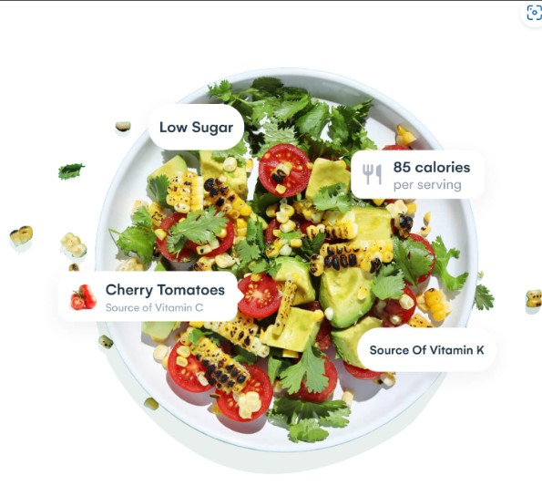

Due date: May 28 by 23:59
Course coordinator/ Lecturer: Mr. Long Nguyen Minh
Student:
Nguyen Quoc Binh – s3818140
Tran Manh Hung – s3836286
Dang Minh Tam – s3980087
Pham Tuan Kiet – s3818204
After Assignment 2 and discussions among team members, our team decided to keep the name: Vivy.
Student 1: Nguyen Quoc Binh
My name is Nguyen Quoc Binh (s3818140), I am an undergraduate student in the Robotics and Mechatronics major at RMIT University Vietnam. I am enthusiastic about technologies such as computer science, automated systems, and artificial intelligence, which is the reason why I selected this course since it offers knowledge in a wide range of technology areas. In addition, I also have prior experience with electrical design, mechanical design, and embedded programming due to my work on several projects during the study period. My hobbies are traveling, reading, watching movies (especially sci-fi and action movies), and playing video games in my free time.
Student 2:Tran Manh Hung
My name is Tran Manh Hung - 3836286, currently studying Robotics and Mechatronics major at RMIT University in Vietnam. In my spare time, I enjoy playing sports including badminton and football, watching movies and playing video games with my friends. Since we live in a 4.0 industrial revolution, I am passionate about advanced technology sectors such as artificial intelligence, advanced robotics and smart automation, therefore, this program will help me equip fundamental and necessary knowledge for my future occupation. Besides, the school provides an international environment for me to expand my relationships with many people from different countries.
Student 3: Pham Tuan Kiet
My name is Pham Tuan Kiet, and my student ID number is s3818204. I am a first-year student who is studying Information Technology at RMIT University. My interest in IT is Artificial Intelligence. Because I am a newbie to IT, there are a variety of new things awaiting me to explore in this vast field. This first semeseter at RMIT provides me with a basic knowledge of Python so I can consider myself an intermediate-level user of this coding language. About my hobbies, I love watching drama films especially Chinese ones. I also fell in love with sci-fi types. I get bored when I watch movies with mundane motifs, but sci-fi movies do the opposite thing. They flow my mind with creative and captivating ideas and leave long-lasting memories in my brain.
Student 4: Dang Minh Tam
My name is Dang Minh Tam, my student ID is s3980087, and I am a freshman at RMIT University majoring in Information Technology. I enjoy traveling to new places and learning about other countries' languages, cultures, and people. In addition, I am interested in coding and have some computer science skills, therefore I chose this path. Aside from the numerous future opportunities that this career offers, I hope to find more common ground in this way, enhance more knowledge and challenge myself in numerous arrays and cases.
The link to our webpage:
The link to our GitHub repository of the project:
Comment:
Based on the commit history of our project, we can say that everyone in the group finishes their task on time and follows the requirement of our team. As can be seen in the figure, Binh was the person who created the repository and shared it with other members of the group. He also transferred his parts from the report to the web page before other members so that our group can have a general idea of how to work with Git and utilize the HTML language. Other members learned how to use Git and transfer their part to the GitHub webpage of the assignment after Binh finished his part. For the individual task, Hung transferred his Personal Information (PI), Group Reflection (GR), and Plans and Progress; Tam transferred his PI, GP, Overview and Aims; Kiet transferred his PI, GP, Roles and Risks. Finally, our team checked and edited the webpage together, and all the changes will be pushed to GitHub from Binh’s account.
Topic:
Our group's goal is to create an app that will help users reducing food waste by suggesting different solutions. People nowadays don't have much time to care about their physical health and global warming has been a hot topic in recent years, besides reducing food waste and increasing people's healthy lifestyle, the app also helps to reduce environmental pollution. Beside the main function of our app, we also aim to achieve a variety of minor benefits. We want to create a platform to help people better control and monitor their diet, such as by showing the calories of the food, the ingredients in each meal, planning a suitable amount of food for purchasing, and receiving notifications when the ingredients (or leftovers) is about to expire. As a result, we can save money, reduce food waste, raise public awareness about the importance of food and protect the environment by reducing organic waste.
Motivation:
After researching the consequence of food waste and its impact on the finances and the environment in Vietnam, our team realizes that we need to do something to change the current situation. Basically, despite being a developing country, the amount of food waste in Vietnam is huge (compared to other developing countries) and affects the development of the country (losing about 3.9 billion USD in GDP per year) [1]. Wasting food creates many problems such as pollution (both in producing and discarding the food). In our opinion, those wasted foods instead of being wasted can be used to provide support for people who are in poverty and donate to help many orphanages. Moreover, we want to help people to have a healthier lifestyle. A healthy lifestyle is also a trend in many countries in the world at this moment, however, it is not considered as important in many developing countries such as Vietnam despite we already have a relatively healthy food portion compared to countries like the US. To our knowledge, many Vietnamese (especially young people) love eating fast foods and drinking Coke, which is unhealthy and can lead to diabetes. On the other hand, the quality of food in Vietnam is a concern since many people have illnesses such as cancer or many serious diseases due to the lack of regulation in manufacturing foods. Due to those reasons, it is better to cook your own meal and select the organic ingredients.
Landscape:
This is not a new concept on the platform; there are some pioneer apps with similar ideas, such as Too Good To Go, NoWaste, OLIO, Kitche, and Misfits Market. These apps all have the same purpose: to manage the leftover food in our homes and to keep track of our bodies' calories. The difference is that all these apps always try to sell the remaining foods rather than find other ways to deal with them. However, because people in Vietnam do not want to eat "leftover" food, these apps may not work well in countries like Vietnam. So, rather than trying to sell or trade these foods, we decided to process them sooner or reduce our ability to buy too much food
Project aim:
The primary goal of our group is to reduce food waste in Vietnam. With over 8,000,000 tons of food wasted each year, Vietnam currently ranks second in Asia-Pacific in terms of food waste. Vietnam has twice the rate of food waste as other advanced and wealthy economies around the world [1]. These figures do not stop there but will continue to rise in the future. As a result, this app’s top priority is to reduce the amount of waste trash to the environment, allowing us to protect the environment at a time when global warming is becoming an important concern on the planet.
Goals:
Our first goal is to create the proper food portion. We will design a fit meal schedule for them in daily or weekly increments based on the customer's weight based on the information they provided previously and the ingredients that have been scanned. Then, based on their personal desires, such as being skinnier, gaining muscle, or improving health and disease prevention, we will provide them with a variety of foods and beverages based on the ingredients in the refrigerator. As a result, users can easily track calories in and out of their bodies every single day or meal, as well as avoid becoming bored with food; conversely, the app will help to encourage people to eat more for some people who are stuck in anorexia problems. We live in the technology industry, where everything is growing at a rapid pace, from business, technology, healthcare and lifestyle. Also, because we had too many things to remember, we used to forget what we bought for our house. As a result, they tend to buy similar items that are duplicated with the ingredients in the refrigerator at home, which means they will have a large amount of the same food and will throw it away if it expires. In order to solve those issues, our app has a function to avoid overspending on food and reduce the amount of food waste. This function will tell us exactly the amount of food (leftovers) in the refrigerator and remind us of the food's near expiration date so we can use it quickly. Basically, it will provide an appropriate list of necessary food that the user needs to buy and a list of existing food, which will reduce the amount of waste food created by overspending on food. Designing healthy menus is an advantage of our app. People prefer eating fast food to eating healthy food or cooking at home. According to a recent Decision Lab poll of 16,000 residents (Generation Z) in Vietnam's three largest cities consists of Hanoi, Da Nang, and Ho Chi Minh City, which accounts for 15% of a population of roughly 93 million, spend on average 890,000 VND ($40) per month on eating out [3]. The cost of $40 may seem insignificant to a foreigner, but it appears to be significant to many Vietnamese. To help citizens live healthier lives, we decided to include a feature that checks the food's calories and ingredients. All we need to do is search for the name of the food, and we will conduct research on its sources, ingredients, and nutritional content. Furthermore, if users are considering what to eat for the next meal, we have a tool that will suggest healthy meals based on their preferences, ensuring that they will be provided with adequate nutrition and energy for the day. Finally, we could help customers by making the process of making food simpler. On our app, you can find a wide range of food and beverage recipes from various cooks and chefs around the world. Furthermore, if you cannot imagine how to cook the dish, we provide links to tutorial videos on our app, which is very useful for beginners or those who want to learn to cook themselves. As a result, you gain more knowledge about cooking and save money instead of eating out. In our opinion, the core feature of this app is the ability to scan the ingredients and provide the user with a suitable recipe according to the scanned ingredients. Other features such as the ability to calculate the food portion suitable for the user's weight, the reminder schedule for leftovers in the fridge and the data for tracing eating habits (AI) in one app can be eliminated if we only have enough time and resource for one of our goals.
Since food wastage is a widespread issue in many countries, particularly in Vietnam, managing food waste becomes a crucial problem. If success, it will result to increase our capacity to maintain our economy and environment and also help us have a healthy eating habit. Identifying that the problem needed appropriate measures to be solved, Binh - our team leader proposed a project to develop an application that allows users to reduce their food waste and manage their daily diet in a healthy way.In recent years, the mobile phone is an indispensable item for the majority of the population and Android is now used on millions of mobile devices in over 190 countries across the globe, making it the most widely used mobile platform [4]. For that reason, we decided to develop an Android application using Android Studio in order to reach the majority of clients over the globe and will develop to cross-platform further in the future.
In our proposed approach, this project will handle two issues which are food waste and unhealthy diets by helping people build a unique recipe for their meal. We want to develop a relevant application that can provide and share sustainable recipes which make such food products delicious and safe to eat. The app will have a function to suggest the appropriate meal for the user with calories for their consumption through the scanned ingredient. There are several key features that will offer great value for the clients. Firstly, we expect our app's onboarding process to be as smooth as possible. We expect our app can be used right away without any registration and will offer further advanced features for the user to register through their familiar account such as Facebook, Google, etc. Our application will use questionnaires to collect data such as weight, cooking habits and lifestyle then automatically save these entered data even if the user not doing the registration. By doing so, we can gather a lot of data for future development to improve our app performance. Secondly, we want to create a feature where the user can submit their custom goals. The app will ask what is the main purpose that the customers try to achieve besides the pre-defined options. There are several typical objectives such as maintaining a healthy weight, sticking to a strict diet. This data on the achievements of the existing client will also be gathered for our product update afterward.
The next feature which also is the core function of our app is nutrition data input. By integrating with extensive food databases and based on the information of user’s favorite and recent meals, the app has the ability to calculate the calories that need to be consumed and allow the user to access the nutritional information as well as the expiration date of the ingredient, suggest the user the suitable recipe or create their own custom. Besides, our team wants to develop a feature to scan the ingredients through the camera, however, this took a lot of effort and study on the vision algorithm to implement successfully. When the user put all the ingredients in one place and uses the app to scan at that location, the screen will appear the relevant information of these ingredients regarding names and calories. We plan to develop a feature with an AI model to track the user's daily calories intake, then suggest reasonable meals based on the user’s health condition like weight, disease, etc with the nutritional value of the recommended dish demonstrated in the picture below:

Figure 3: Example of illustration of the dish. [5]
Besides, we expect our app to include meal planning functionality which allows users to schedule meals using leftovers in the fridge before they expire. The user first will input relevant information about the remaining resources in their fridge then the app should be able to provide versatile recipes with ingredient breakdowns to enable preparing the food based on the scanned ingredient for example. This feature will not only assist the clients to have more sufficient diets but also lead to minimizing food wastage as much as possible. In addition, sometimes, users won't remember to access the app frequently because of their work or busy schedule, therefore, a notification feature will be essential for our app to encourage and remind our customers to stick to the plan and update their data often. Since we want to deliver the best experience for the users, in order to avoid the annoying of unnecessary notifications our app will have a section in the setting where clients can fine-grained customization of various notifications' kinds.
Our application requires an enormous number of databases such as web applications, nutrition and recipe databases. For our website application database, we want to connect our app to our website using MySQL to keep user data synchronized and accessible for other platforms. Regarding nutrition databases, it is a foundation of our application which provides it with nutrition-related data namely calories, carbohydrates, protein, and fat. Additionally, food databases make the program incredibly simple to use since the users do not need to input a lot of detailed information. The proposed application will use Nutritionix API since Nutritionix has a large validated nutrition database and provides several functionalities of the API suite.
For our plan, we will conduct this project in 5 steps:
Step 1: Prototyping
This is the stage that we are capable of implementing as students. The interactive prototype is a click-through version of a product that only exists in design, without coding development. There are several benefits of prototyping, one is that we are able to test it utilizing usertesting.com or related services before we begin to get involved in developing it to see whether it appeals to your target market. Secondly, getting feedback during the prototype stage also be advantageous for making sure that our design approach is workable and for identifying compromises before coding starts. Since the development of a technology project took the most expensive part, our application is no different.
Step 2: Development
This is obviously the phase where almost all of the work happens. This stage will be the most time-consuming for the developers and a lot of requirements need to be taken into account while custom-designing an app. Firstly, for back-end development, since any mobile application solution has a back end, this is a place where all the database, APIs, logic and other background stuff is stored. Back-end developers have the authority to control the content of our applications, users and notifications management. In general, backend development is the cornerstone of any application development. Secondly, we also want to upgrade our software with AI capabilities such as developing machine learning algorithms that assist user progress in the future based on their present behavior recorded in our product or smart assistant offering suggestions on customers to alter their eating routines for improved outcomes. Besides the back-end department, we also need to have front-end developers who design the UX/UI and improve the performance of the product for the customers.
Step 3: Testing
In order to ensure our app is operated efficiently and smoothly, testing it before releasing it to the public is very important. In this stage, we need to consider all the device specifications like different screen sizes, OS (operating system) variations and flavors that our program needs to support. Also, think about every difficult scenario that might occur when users engage with the app. For this reason, we need to assign this phase to experts who are capable of running many sorts of tests on several devices simultaneously which assist identify errors even during the development phase since they have access to specialized testing platforms.
Step 4: Release
Once we've completed the testing and made sure the app is working properly, we'll apply for approval for the software to be released on the app marketplaces of different platforms such as Google Play and App Store. Additionally, we will need to convert the server to a live environment after stress-testing it earlier. When having our applications accepted into these markets, the customers can download our product and use it, we can begin marketing to expand the users.
Step 5: Maintenance and Upadate
After making our app available to the general public, we need to monitor a lot of things to maintain the app’s performance as best as possible. We need to track what our potential clients are and the number of people sticking with our app. From that, we can adjust and support our customers to get a great experience when using the app. In addition to monitoring app data, we must prepare for future updates and features to support the most recent iOS and Android features. Lastly, even after going through testing, it is inevitable to encounter some weird and strange problems and bugs on certain devices, therefore we need to troubleshoot any bugs that arise making the app less enjoyable for the users.
Since half of the team members are first-year students in IT and the others remaining are undergraduates in robotics and mechatronics major, we lack the necessary knowledge, appropriate skills and experiences to complete the project. In specific, the back-end development of our software requires developers that have many years of experience in the industry and understand APIs and stuff deeply to work with such a large food database, which is the dead-end in our progress at the moment. Additionally, this kind of technology project demands a lot of resources such as time, money and people, which is also a big limitation for 4 members team who are still students and still have to study at university like us so we cannot invest and focus fully on this project.
For the current progress of the project, since most members are first-year students and we have a limited amount of time, our team can only make the presentation to advertise the application and illustrate any formation related to our project.
We have decided on the roles for each member of the team. The roles are defined by their background information and interest in that field. The paragraphs below will clarify the duty of each member and express how important they are to the success of this project.
Nguyen Quoc Binh: Lead Developer
- As he has stated in his personal information, Nguyen Quoc Binh is in the final year of the Robotic program, and he also has years of experience in doing projects. With his deep knowledge of technology and teamwork skills, he has been trusted to hold the position of Leader Developer. Binh’s main duty is coordinating the tasks of the team. He is the person responsible for making appointments to discuss ideas between members. He also maps out the plan for finishing the tasks. To be more specific, he analyzes the project demands and then draws the timeline with tasks equally and suitably assigned for each member.
Tran Manh Hung: Backend Developer (AI)
- Similar to our Leader Developer, Tran Manh Hung is also in the final year of the Robotic program. The different point is he has knowledge of AI since he has spent years researching this field. Along with his coding skills, Tran Manh Hung is assigned to the Backend Developer position. In other words, he is in charge of developing AI and training machines for our application. To be more specific, he has to write mathematical algorithms for AI and train our application to recognize all the food types. Then, the application can suggest healthy meals that make full use of the customer’s food.
Dang Minh Tam: User Interface Designer and Frontend Developer
- Dang Minh Tam is a first-year student in the Information Technology course. He has intermediate coding skills which are suitable for holding the position of User Interface and Frontend Developer. In this role, he has to take responsibility for creating the interface for our application and its advertising website. He has to guarantee that the design is captivating, and the features are user-friendly. This step is necessary to draw target customers to our project. Without his effort in Interface design, the project will lose its target customers because they find the application and advertising website unsightly and difficult to use.
Pham Tuan Kiet: Full-stack Developer
- Similar to Dang Minh Tam, Pham Tuan Kiet is also in his first year of an Information Technology course. He has nurtured the love of technology for years. Additionally, He also took his first coding subject in semester 1 and several online courses about Python on Codecademy. With his keen interest and coding expertise, Full-stack Developer is the right position for him. In this role, he has to work on two sides of the application and websites: the backend and the front end. For the former, he needs to collaborate with Tran Manh Hung, our backend developer of AI, to support him in the process of creating logic for developing and training the AI model. For the latter, Pham Tuan Kiet needs to aid Dang Minh Tam in implementing and designing the architecture for our application and website.
Final statement:
- Every role in this project is equally important. The participation of each member is indispensable, and the project cannot run without their restless effort.
Here is the list of tasks that need to be done to complete our project:
- Make a database for storing the information of the customers (their age, weight and preference including their allergy to specific foods, vegetarian, etc.).
- Build a database that has various receipts with different values of calories.
- Create a feature allowing the user to input the names of ingredients by text.
- Scanning function that allows the customer to scan all the ingredients by using the camera on the phone.
- Train an AI model with the capability to recommend a suitable food portion based on user weight and a list of recommended receipts based on user preference (based on their ingredient and their frequency in the selection of food).
- The “Remind” feature will remind the customer about the leftover in the fridge when the user inputs the food and its due date.
- The “Switch User” feature allows the app to have many users on 1 smartphone.
- Build the User Interface (UI) for the application.
- Build an Android app and develop another version on the IOS platform (cross-platform development).
- Build the website.
Based on the remaining time of this semester, the most important task is to finish building the website for the report and doing the presentation for our project idea. About the app itself or any features, in our opinion, with the remaining time and the limited knowledge in programming applications as well as Artificial Intelligence (AI), we cannot build any functions of the application or the database as well as train the AI model. If the time duration is extended, our team could work more on the project such as building the UI of the application and developing the algorithm to help with the food recognition function to identify the ingredient in the picture. For the use of AI in the project, to reduce the budget and increase the performance of the app, instead of using AI to calculate the calories and recommend the receipts, we may build a database and use an algorithm to calculate the calories and recommend the meal for the user.
Software:
- C# for creating an application on the Android operating system-based devices.
- Xamarin allows for cross-platform application development on IOS [6, 7].
- The use of HTML, CSS, and JavaScript to create a website to advertise the application and the website version of the app.
- Utilizing Google Colab to set up and train the AI model of the project [8].
- Using APIs to access database.
- Microsoft Word for the documentation of the project.
- Microsoft Team and Messenger for team meetings and communication.
- Microsoft PowerPoint for the demonstration of the project.
- Jupyter app for the notebook of the project [9].
- Trello is used to create a Gantt chart, which will control the timeline of the project [10].
- GitHub Desktop for storing and sharing the working file of the app [11].
Hardware:
- Smartphones to test the website, the scanning ability of the application and other features (if available).
- Computers (or laptops) to test the accessibility of the website and access the website version of the app.
- Server to store the information of the customer and the database.
In order to test each feature in our project, we will need to test every feature individually and the followings are the criteria to ensure the project meets our expectations:
| Metric | Description |
|---|---|
| Food recognition feature | It is the most important feature of our project. Basically, we will scan all the ingredients and foods (which is already in the database) and the app should be able to identify the name of each ingredient and food. |
| Receipt generation function | The receipt must be generated within 5 seconds and include all the scanned ingredients, if the app cannot find the result (including all the ingredients) then it must find the result that has at least 80% of the ingredient that has been scanned. Moreover, the recommended list of receipts for the user based on their preferences and their weight. |
| Food portion | Food portions must be appropriate for the user’s weight based on the recommended daily meal standard. Results should have 95% accuracy. |
| Input feature | The input feature should allow the user to input the name of the ingredient by text. Moreover, it should be able to recognize the ingredient based on the text with different formats (for example tomato and TOMATO). |
| Remind feature | The remind feature should remind the customer based on the input day and the database (due date assumption based on the input day as day 1 and the user can modify the due date). The result must be in the range of a 1-day difference. |
| Switch account ability | The application needs to be able to allow the user to switch between many accounts. Basically, one application on a smartphone can have multiple people use it at the same time. |
For the tester of this project, our team can test the application ourselves and we will find at least 30 random participants (volunteers) to test all the functions of the application.
The following table is our estimated timeline for the project:
| Project Timeline | Activities |
|---|---|
| Week 1 |
Nguyen Quoc Binh: finish Personal Info and Career Plans in the report, study how to use GitHub, and research the information related to the Project Description.
Tran Manh Hung: finish Personal Info, Career Plans in the report and study how to use GitHub. Dang Minh Tam: finish Personal Info, Career Plans in the report and study how to use GitHub. Pham Tuan Kiet: finish Personal Info, Career Plans in the report and study how to use GitHub. |
| Week 2 |
Nguyen Quoc Binh: do Group communication, Skills and Jobs, Scopes and Limits, Testing, and Timeframe in the report, and study HTML.
Tran Manh Hung: do Plans and Progress in the report, and study HTML. Dang Minh Tam: do Overview, Aims in the report, and study HTML. Pham Tuan Kiet: Roles, Risks in the report, and study about HTML |
| Week 3 |
Nguyen Quoc Binh: Group Processes, Group Reflection in the report, edit the report, create, and edit the PowerPoint slides.
Tran Manh Hung: Group Reflection in the report, create PowerPoint slides, and create a website using HTML. Dang Minh Tam: Group Reflection in the report and work on building a website using HTML. Pham Tuan Kiet: Group Reflection in the report and work on building a website using HTML. |
| Week 4 |
Nguyen Quoc Binh: work on building a website using HTML and do the presentation about the project.
Tran Manh Hung: work on building a website using HTML and do the presentation about the project. Dang Minh Tam: work on building a website using HTML and do the presentation about the project. Pham Tuan Kiet: work on building a website using HTML and do the presentation about the project. |
| Week 5 |
Nguyen Quoc Binh: study how to build an AI model.
Tran Manh Hung: study how to build an AI model. Dang Minh Tam: study C# and Xamarin. Pham Tuan Kiet: study C# and Xamarin. |
| Week 6 |
Nguyen Quoc Binh: make a database for storing the information of the customers and study how to build an AI model.
Tran Manh Hung: build the database for receipts with their respective calorie values and study how to build an AI model. Dang Minh Tam: study C# and Xamarin, and build the application (frontend). Pham Tuan Kiet: study C# and Xamarin, and build the application (backend). |
| Week 7 |
Nguyen Quoc Binh: make a database for storing the information of the customers and build an AI model.
Tran Manh Hung: build the database for receipts with their respective calorie values and study build an AI model. Dang Minh Tam: study C# and Xamarin, and build the application (frontend). Pham Tuan Kiet: study C# and Xamarin, and build the application (backend). |
| Week 8 |
Nguyen Quoc Binh: build an AI model.
Tran Manh Hung: build an AI model. Dang Minh Tam: develop the application (frontend) on Android. Pham Tuan Kiet: develop the application (backend) on Android. |
| Week 9 |
Nguyen Quoc Binh: Build and train the AI model in recommending receipts for the customer.
Tran Manh Hung: Build and train the AI model in tracking the customer’s preferences. Dang Minh Tam: develop the application (frontend) and the “Remind” feature on Android. Pham Tuan Kiet: develop the application (backend) and the scanning feature on Android. |
| Week 10 |
Nguyen Quoc Binh: Train the AI model to work with the database in recommending receipts for the customer.
Tran Manh Hung: Train the AI model to work with the database in tracking the customer’s preferences. Dang Minh Tam: Build the application (frontend) and remind feature on Android. Pham Tuan Kiet: Build the application (backend) and scanning feature on Android. |
| Week 11 |
Nguyen Quoc Binh: continue to improve the accuracy of the AI model in selecting the appropriate receipt based on scanned ingredients.
Tran Manh Hung: debug and update the AI model. Dang Minh Tam: build the application (frontend) and “Remind” feature on IOS (use Xamarin). Pham Tuan Kiet: build the application (backend) and scanning feature on IOS (use Xamarin). |
| Week 12 |
Nguyen Quoc Binh: integrate the scanning feature with the database and the AI model.
Tran Manh Hung: integrate the scanning feature with the database and the AI model. Dang Minh Tam: update the application (frontend) and integrate the “Remind” feature with the database on Android. Pham Tuan Kiet: build the application (backend) and integrate the scanning feature with the database and the AI model on Android. |
| Week 13 |
Nguyen Quoc Binh: integrate the scanning feature with the database and the AI model.
Tran Manh Hung: integrate the scanning feature with the database and the AI model. Dang Minh Tam: update the application (frontend) and integrate the “Remind” feature with the database on IOS (use Xamarin). Pham Tuan Kiet: update the application (backend) and integrate the scanning feature with the database and the AI model on IOS (use Xamarin). |
| Week 14 |
Nguyen Quoc Binh: debugging the application and its features.
Tran Manh Hung: debugging the application and its features. Dang Minh Tam: debugging the application and its features on Android. Pham Tuan Kiet: debugging the application and its features on Android. |
| Week 15 |
Nguyen Quoc Binh: debugging the application and its features, as well as preparing the document for the presentation.
Tran Manh Hung: debugging the application and its features, as well as preparing the document for the presentation. Dang Minh Tam: debugging the application and its features on IOS, as well as preparing the document for the presentation. Pham Tuan Kiet: debugging the application and its features on IOS, as well as preparing the document for the presentation. |
| Week 16 |
Nguyen Quoc Binh: do the demonstration about the project.
Tran Manh Hung: do the demonstration about the project. Dang Minh Tam: do the demonstration about the project and illustrate the final product. Pham Tuan Kiet: do the demonstration about the project. |
Risk analysis and risk treatment plan:
| ID | Risk | Description | Mitigation |
|---|---|---|---|
| 1 | Communication issues | Two communication issues can affect our team's performance. The first problem is lacking time for group discussion. Due to the limited time in tutorial class, our team have little time to talk with each other. Our tutorial lecture only provides us 90 minutes for discussion weekly. Hence, our team has insufficient time to discuss the project’s stuff. The second issue is the inexperience in group discussions. Pham Tuan Kiet and Dang Minh Tam are two first-year students in our team who are new to working on university projects. This means they may not be as good at expressing ideas and thoughts as others. This can lead to mutual misunderstanding causing working productivity to decrease. | Our team created a group chat on social websites where our teammates can talk to each other about work. Microsoft Team and Messenger are the two preferred social apps that we use for discussing outside the class. This means we can make online appointments anytime without caring about the time limit. Having more time conversing with others and discussing topics related to projects makes everyone deeply understand what they need to do and how they can achieve it. For the second issue, we encourage two first-year members to map out their ideas on paper in the form of scripts or diagrams. In that way, their thoughts would be easier to comprehend. |
| 2 | User Information leak | This risk is about the private information of users getting exposed to people with bad intentions. The perpetrators could be hackers or core members. Hackers attack our website and application via vulnerabilities of the security site. Core members secretly steal data from the project’s database. They use this private information to sell it to other parties for money or damage the reputation of our project. Whichever the reason lying behind their course of action is, the result is devastating and causes the customers to lose their trust in our products. | Backend and front-end developers have to collaborate to create apps and websites that have strong security. To accomplish this, our developers need to upgrade our skills in cybersecurity. What is more, we also have to keep strict track of members’ activities by equipping our products with a history tracking tool. This course of action is to prevent core members from leaking private data of systems and users to the outside. Our team can also consider the third-party option. This means we will hire other cyber security companies to protect our private information. |
| 3 | Bad recommendation of food portion (based on user’s weight) | In this bug, the application cannot recommend a meal that suits the users’ weight. There are two potential causes behind this error. Firstly, the app cannot correctly recognize the food types. In other words, the recognizing system of the application is broken due to the wrong algorithm applied. Hence, food types cannot be scanned and classified exactly by the app. Secondly, the intelligent machine of our app has problems with analyzing data input. To be more specific, the app fails to choose proper food types to build meals that have total calories like recommended daily calorie intake of customers. This causes the customers to gain more weight which does not meet the app’s guarantee for healthy meals. | There are two solutions to tackle this risk. For the first cause, we need to fix the recognition function to help our app recognize the correct food types. This fixing process will last for at least two weeks until we make sure our application can run well. The first thing we do is to identify and re-train the food types that our app cannot recognize from customers’ feedback. After that, we will conduct the overall scanning bug by using our application to scan all food types. Any error in recognizing food types that are detected in this scanning will be fixed by backend developers. For the second cause, we will need to find the errors in the algorithm of AI. This course of action requires us to execute several test cases on building meals. We will choose meals that have different calories compared to the suggested daily calorie intake. After locating the bugs in these meals, backend developers will fix and test the app again to make sure the app can operate well without repeating that bug. |
| 4 | Error in Remind function | In this error, the application cannot execute the “remind” notifications to the user’s account. The core problem may be caused by either the program or the interface of the app. In terms of the program, the codes that backend developers wrote for it to perform the reminding order may be in problems. Perhaps they were careless in coding this order leading to the app’s inability to send “remind” notifications to users’ accounts. In terms of the app’s interface, the app might send the message to order the interface presenting the reminder to users’ accounts, but it did not work. There would be some bugs in the interface that made the notifications could not be present. | Both the debugging processes for the program and interface need at least 2 days until it is done. First, our team will launch the overall scanning to navigate to the bugs. Then, our developers will engage in fixing the errors before conducting several test cases to ensure that the application can operate well. If the problem comes from the program, backend developers need to jump in to detect and fix it. This requires them to adjust the coding that they applied to the “remind” feature. If the problem comes from the interface, front-end developers need to engage to fix this error. This requires them to check the codes they have built to form the bond between the logical machine and the interface. Perhaps some bugs prevent the interface from receiving messages from the logical machine. |
| 5 | Repetitive receipts | In this bug, the application repeats the receipts from past days within a week. The problem is mainly about the algorithm that our backend developers applied for AI. All the algorithms must be carefully chosen and arranged to teach the app how to create different receipts for customers. Our developers could make some mistakes in choosing the suitable algorithm for AI to produce unique receipts. This results in repeating receipts for customers of the app. Customers might get bored with the repetitive meals leading to quitting the app. | Backend developers need to change or adjust the algorithm of AI. This process will last for at least 7 days until it is done depending on the sophistication of errors. First, our developers need to analyze the algorithms to figure out the unreasonable points within them. We will conduct the analysis procedure to check the correction in choosing these algorithms and the way we arrange them to train our AI model to offer different meals. After detecting all the bugs, our developers will adjust the algorithms and test the application to guarantee it can produce unique receipts for customers each day within a week. |
| 6 | Difficulties in training the AI model | This risk is about the difficulties in training AI. The biggest obstacle that discourages people from studying AI is its sophisticated feature. The AI field is massive because there are lots of parts to master in AI. Hence, learning AI is undeniably time-consuming and hard to do. To train an AI model, an AI engineer needs to spend at least 4 to 6 months learning the basic knowledge of AI. Then, they must spend another 6-month applying their knowledge to just create simple AI models. Our application requires us to create a slightly complicated AI model for automatically recommending meals that meet our mentioned criteria. | We have two solutions to mitigate this risk. Firstly, we encouraged our backend developers to start learning AI at the beginning of the course. It is of great importance for our developers to discover AI before we conduct the project. This course of action helps backend developers gain as much knowledge as they need for creating a simple AI model. In that process, we also prompt our developers to seek additional AI documents for studying purposes. Having more sources to research is critically beneficial to their AI study progress. Secondly, we also encourage our developers to consider consulting AI professionals. They can offer our team constructive ideas in training AI models for our project. |
| 7 | Website issues | This risk is about some possible problems that our advertising website may have. There would be some bugs and errors that prevent the website from running properly. For example, users cannot gain access to our website due to a bug that prevents our website from giving users entrance authorization. Another instance would be customers getting in trouble clicking any tab buttons on the website. They clicked but the website did not move them to another page. | Our team will conduct a debugging process that lasts for at least 2 days until it is done depending on the sophistication of the bug. We will analyze the bug to know which part the bug comes from. Then, we will conduct the overall scanning to navigate to the bugs. After detecting the bugs, Front end developers will figure out ways to fix them. This may require them to adjust the codes they used for creating the structure of the interface. Before allowing customers to use it, our application needs to be tested several times to guarantee it can run well without repeating that bug. |
| 8 | Bad optimization of the application | This risk is about poorly optimized applications. To be more specific, we might focus too much on advancing our application, but we forgot not to pay attention to how inefficiently it runs on the user’s device. There are a lot of consequences that a poorly optimized app brings to users’ devices. A clear example would be an advanced application that will consume the massive space of disk in the device of users. This leads to slow data processing or even temporary shutdown of the device. | Our solution is to reorganize our coding structure. We recognize that codes behind the logical machine play an important role in how our app runs on the user’s device. For example, we can change the sorting function from the bubble sort to the merge sort. Traditionally, bubble sort in the application can take up to 1,000,000 steps to sort the list of 1000 elements. It is not the case for merger sort. This sorting type can execute the results 100 times faster with about 10,000 steps. This allows the application not to take up large memory space and it also prevents the device from temporarily shutting down due to overloading data processing of the app’s functions. |
Our team communicates daily through Messenger and weekly meetings will take place on Microsoft Team. If a member cannot be communicated with, we will give that member 24 hours to provide a justified reason, which will be decided by the group leader based on the importance of the task and its impact on the possible delay of the project. If the consequence is not serious, that member will be consulted and have an agreement on the communication guidelines of the team. On the other hand, if the consequence is serious or the situation keeps happening many times, that member will be considered to have a negative contribution to the project and report to the management team (lecturer and course coordinator in this case).
The followings are the required skillsets and position description in order to complete the project:
- Position 1: Software Engineer, who has experience in working with programming languages such as Python, doing projects related to image recognition, working with big data and developing the AI model to handle the database. Additionally, the engineer has the responsibility of troubleshooting and upgrading the existing AI model.
- Position 2: Software Engineer, who is familiar with working with AI models and integrating AI into the application. Similar to the first position, the engineer has the responsibility of troubleshooting and upgrading the existing AI model.
- Position 3: Full-stack Developer (Backend) having a skill set in app programming and in charge of maintaining servers. Moreover, this position needs to maintain and debug the backend of the application.
- Position 4: Full-stack Developer (Frontend) working with UI of the app (cross-platform for both IOS and Android) and the website. This position also needs to work with the business partners (shareholders) of the project.
All the mentioned positions are the most important skill sets that we need to finish our project. Besides all the mentioned skill sets, every member of the team should have good communication skills, teamwork experience and problem-solving skills. Finally, all of them need to have great time management skills, be able to adapt to the change in the working process and willing to learn about new things.
Student 1: Nguyen Quoc Binh
In my opinion, each member of our group has a good mindset in finishing their part on time. Moreover, they are also willing to rewrite their part to meet the standard of the group if there is good advice from other members. Every member understands their responsibility while working as a team, which allowed the team to work well with individual contributions in developing ideas, sharing group activities, helping other members, and having a wide range of skillset in many areas. The only thing that our team needs to improve is the frequency of communication in the group. Every member should be more active in sharing their opinions instead of waiting to be asked since the lack of communication leads to unexpected errors in writing reports and misunderstandings about the expected outcomes of the project. As the most surprising thing, I have to say that the team performance is better than my expectation since this is the first time we cooperate working on a project. Finally, one thing that I have learned about working as a group is to achieve the best result, I need to have more trust in other teammates and every member needs to help each other and share their opinion to get a good teamwork experience.
Student 2: Tran Manh Hung
From my perspective, everyone on my team is very easy to cooperate with and has great teamwork during the semester. Each individual has their own strengths and weakness, and always acknowledges the need for change when getting recommendations from other members. In specific, Binh – our team leader is very good at managing all the work and always give good suggestion to all the members, Tam and Kiet who although just study the first semester in university, have great writing skill and always seek advice for better performance. Everyone is very responsible for completing their tasks before the deadline, which makes our teamwork extremely effective. The team atmosphere is also good, which helps individuals to perform better in their work and improve productivity, and creativity. However, there is a limitation existing in our teamwork, that is the communication between each member. Despite each member making great progress on their work, we rarely communicate with each other to update closely on the progress resulting in some misunderstandings in the outcome. Overall, the team's performance is outstanding though this is the first time that everyone has worked together. For me, I have also learned a lot from others and improved my soft skills through this project, I am also aware of myself having faith in teammates and always ready to support them when they meet difficulties.
Student 3: Dang Minh Tam
After completing this course, I have a new perspective on the world of information technology. I've gained a wealth of knowledge and experience about how an app works as well as the background of developing a website system. Aside from that, I have learned more soft skills in group performances, such as how to work with others and enhance their abilities. As a newcomer, I do not have much experience working as part of a team, but these guys have led me in the right direction and shown me every step of the team's projects. Binh, as a team leader, has demonstrated a reasonable and accurate plan for a team and has always suggested and guided me on what I am supposed to do in my role. Hung and Kiet, on the other hand, have done an excellent job as team members and have played a vital role in ensuring that we always meet deadlines on time. We don't have any offline meetings during the project because of our different school schedules. We constantly communicate via Messenger about any errors that need to be fixed or work division. Fortunately, we never have to struggle under any circumstances; everyone consistently collaborates together and never misses deadlines. Finally, I have a much more understanding of this major and am more confident about my future steps on my path.
Student 4: Pham Tuan Kiet
For this assignment, I performed pretty well. The only mistake that I made was missing the deadline for my first task in this group. I was so regretful of doing this because it slowed down the team’s working progress. The project leader, Nguyen Quoc Binh, talked with me about my case. He gave me many words of encouragement which hoped me to recognize my shortcoming and pay more attention to the next assigned tasks. Thanks to this incident, I have learned that I have to be more responsible with my words and the trust that other people have laid on my shoulders. After finishing this assignment, I recognize that there is still an aspect that our group needs to improve. We should have more time to discuss things with each other. Discussion is critically important in a group project because it helps every member to deeply understand the project’s concepts and how they can execute their assigned tasks well. The fact that surprises me a lot is that even though we lacked group discussions, every member still managed to finish the tasks on time. The project went very smoothly without any major obstacles. From choosing ideas to assigning tasks to every member, there were no conflicts within my group.
Group:
In our opinion, our group worked well on Assignment 3. Overall, every member of our team understands their work and what they need to do to finish the part. Moreover, we think our team is good at teamwork despite there being some miscommunications and misunderstandings during the work process in Assignment 2. This is because our team has members with experience in working on group projects and the first-year members already have some knowledge of IT as well as the responsibility of finishing their tasks on time. Additionally, every team member also tried their best and gave an effort in doing the group assignment, helped other members in finishing their part, and expressed their idea on how to improve the quality of the assignment. After the group project and Assignment 3 in this course, we can say that we have learned a lot about working as a team, collab with members who are not familiar with each other and have more knowledge as well as study about the use of Git and HTML in the IT sector. We knew how to use GitHub to share the project and collab with each other to finish the project and make sure that all members are on the page. In addition, we learn about how to manage the time and flow of the project, share the workload, and communicate with each other to keep track of the progress of the project. Finally, we studied many interesting topics such as AI, programming languages, technologies (software and hardware), and work ethics during the research process for the project idea to become an effective and good engineer, which we think will be helpful for our career in the future. If Assignment 3 could be extended, every member should be more active in group communication about topics such as personal issues with their given part and opinions about project ideas. In order to do that, our team needs to have at least 2 meetings per week to have better communication. Moreover, the use of a Gantt chart for an estimated project timeline to control the flow of the project is necessary for checking each member’s contribution and the current working progress of the project. Finally, every member needs to conduct more research about the tools and technologies used in the project so that the project can be done and our team has better knowledge about these topics.
[1] T. N. Ho, “Food Waste Hinders Sustainable Development,” The Saigon Times, 11-Sep-2022. [Online]. Available: https://english.thesaigontimes.vn/food-waste-hinders-sustainable-development/. [Accessed: 17-Apr-2023].
[2] Too good to go jahresgebühr, https://www.unileverfoodsolutions.at/product/too-good-to-go-jahresgebuehr-12348.html (accessed May 14, 2023).
[3] “Are young, urban Vietnamese spending too much?,” Vietnam Insider, https://vietnaminsider.vn/young-urban-vietnamese-spending-much/ (accessed May 14, 2023).
[4] A. Turner, “2021-2022 phone depreciation rate report (500+ phones),” BankMyCell, https://www.bankmycell.com/blog/cell-phone-depreciation-report-2021-2022/ (accessed May 14, 2023).
[5] “Recipe Nutrition Calculator - analyze recipes for free,” Whisk, https://whisk.com/recipe-nutrition-calculator/ (accessed May 14, 2023).
[6] J. Almeida, “Best 6 languages for IOS app development in 2023,” DistantJob, 25-Jan-2023. [Online]. Available: https://distantjob.com/blog/best-language-for-ios-app-development/#:~:text=Swift,macOS%2C%20tvOS%2C%20and%20watchOS. [Accessed: 17-Apr-2023].
[7] “Xamarin: Open-source mobile app platform for .NET,” Microsoft. [Online]. Available: https://dotnet.microsoft.com/en-us/apps/xamarin. [Accessed: 17-Apr-2023].
[8] “Welcome To Colaboratory,” Google colab. [Online]. Available: https://colab.research.google.com/. [Accessed: 17-Apr-2023].
[9] “Project jupyter,” Project Jupyter. [Online]. Available: https://jupyter.org/. [Accessed: 17-Apr-2023].
[10] “Trello brings all your tasks, teammates, and tools together,” Trello, https://trello.com/vi (accessed May 14, 2023).
[11] “Let's build from here,” GitHub. [Online]. Available: https://github.com/. [Accessed: 17-Apr-2023].